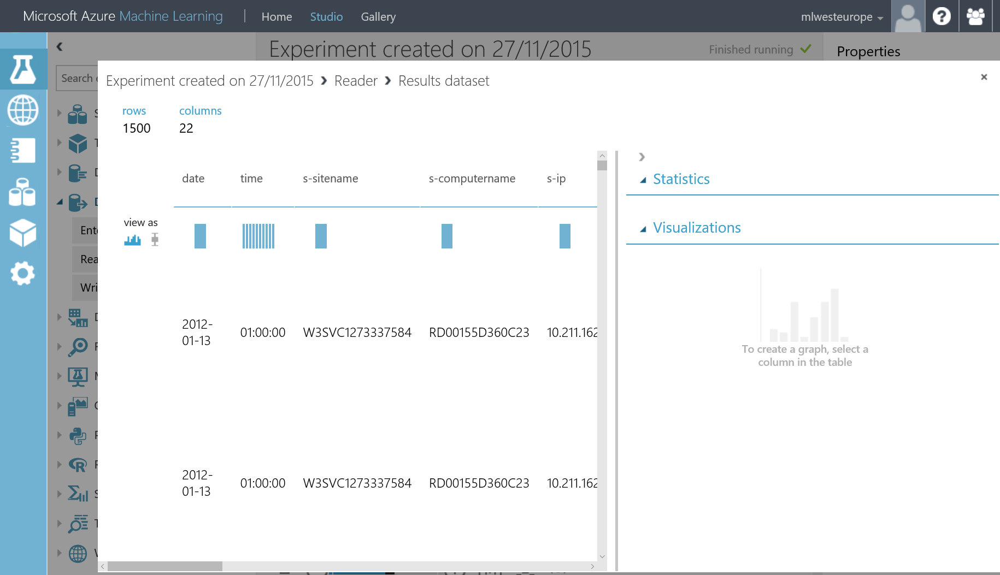

This blog post shows how to load data from blob storage to the following (in order):
There is also a good article with demo videos in the following article: Using Azure Machine Learning with SQL Data Warehouse.
This is a sample.
By convention, all values ended by 34 should be replaced by your own values. For instance, the data storage account is mydata34. Yours should have a different name.
The data is available as a number of flat delimited files in a blob storage container. In this example, there are 2 files. here are a few lines of data:
2012-01-13|02:00:00|W3SVC1273337584|RD00155D360C23|10.211.162.24|GET|/Modules/Orchard.Localization/Styles/orchard-localization-base.css|-|80|-|65.52.74.115|HTTP/1.1|Mozilla/4.0+(compatible;+MSIE+8.0;+Windows+NT+5.1)|__RequestVerificationToken_Lw__=JMngbma7rvbnvrzf3Xos7p8GDz3zu4oNwCqOMd0PpxotKkvlvfzHWsGfYm4BJL5CdOCvg7sdtSdOgRGqG9Uick5Jji4cruyaeOv4fYJeN0snqrkYNUI8M179jbaLw80XvLM2OKk8UjxRpKzwjMbBWt6CilU=|http://site.supersimple.fr/|site.supersimple.fr|304|0|0|209|554|15
2012-01-13|02:00:00|W3SVC1273337584|RD00155D360C23|10.211.162.24|GET|/|-|80|-|65.52.74.115|HTTP/1.1|Mozilla/4.0+(compatible;+MSIE+8.0;+Windows+NT+5.1)|__RequestVerificationToken_Lw__=JMngbma7rvbnvrzf3Xos7p8GDz3zu4oNwCqOMd0PpxotKkvlvfzHWsGfYm4BJL5CdOCvg7sdtSdOgRGqG9Uick5Jji4cruyaeOv4fYJeN0snqrkYNUI8M179jbaLw80XvLM2OKk8UjxRpKzwjMbBWt6CilU=|-|site.supersimple.fr|200|0|0|1917|367|203
2012-01-13|02:00:00|W3SVC1273337584|RD00155D360C23|10.211.162.24|GET|/Themes/Classic/Styles/Site.css|-|80|-|65.52.74.115|HTTP/1.1|Mozilla/4.0+(compatible;+MSIE+8.0;+Windows+NT+5.1)|__RequestVerificationToken_Lw__=JMngbma7rvbnvrzf3Xos7p8GDz3zu4oNwCqOMd0PpxotKkvlvfzHWsGfYm4BJL5CdOCvg7sdtSdOgRGqG9Uick5Jji4cruyaeOv4fYJeN0snqrkYNUI8M179jbaLw80XvLM2OKk8UjxRpKzwjMbBWt6CilU=|http://site.supersimple.fr/|site.supersimple.fr|304|0|0|92|520|218
2012-01-13|02:00:00|W3SVC1273337584|RD00155D360C23|10.211.162.24|GET|/Core/Shapes/scripts/html5.js|-|80|-|65.52.74.115|HTTP/1.1|Mozilla/4.0+(compatible;+MSIE+8.0;+Windows+NT+5.1)|__RequestVerificationToken_Lw__=JMngbma7rvbnvrzf3Xos7p8GDz3zu4oNwCqOMd0PpxotKkvlvfzHWsGfYm4BJL5CdOCvg7sdtSdOgRGqG9Uick5Jji4cruyaeOv4fYJeN0snqrkYNUI8M179jbaLw80XvLM2OKk8UjxRpKzwjMbBWt6CilU=|http://site.supersimple.fr/|site.supersimple.fr|304|0|0|209|517|218
2012-01-13|02:00:00|W3SVC1273337584|RD00155D360C23|10.211.162.24|GET|/Core/Shapes/scripts/html5.js|-|80|-|65.52.74.115|HTTP/1.1|Mozilla/4.0+(compatible;+MSIE+8.0;+Windows+NT+5.1)|__RequestVerificationToken_Lw__=2aNXfgccF5TrHacVp9ReeLniHeKovLv/1lYP13EyQ4pYy21MvX4WFH+1Kg9/R+02r4vhkZo0wvOLXZ233O0Sn2QC+n+7EobKV6+7J0lqG0F1g/oc/RCSO3NhrWAoFNzqIEUm0AgJkY0MIhA5XPTX0s0jFLw=|http://site.supersimple.fr/|site.supersimple.fr|304|0|0|209|517|265
2012-01-13|02:00:00|W3SVC1273337584|RD00155D360C23|10.211.162.24|GET|/Core/Shapes/scripts/html5.js|-|80|-|65.52.74.115|HTTP/1.1|Mozilla/4.0+(compatible;+MSIE+8.0;+Windows+NT+5.1)|__RequestVerificationToken_Lw__=JMngbma7rvbnvrzf3Xos7p8GDz3zu4oNwCqOMd0PpxotKkvlvfzHWsGfYm4BJL5CdOCvg7sdtSdOgRGqG9Uick5Jji4cruyaeOv4fYJeN0snqrkYNUI8M179jbaLw80XvLM2OKk8UjxRpKzwjMbBWt6CilU=|http://site.supersimple.fr/|site.supersimple.fr|304|0|0|209|517|218
Fields are separated by the pipe character ('|'). The name of the fields are:
date|time|s-sitename|s-computername|s-ip|cs-method|cs-uri-stem|cs-uri-query|s-port|cs-username|c-ip|cs-version|cs(User-Agent)|cs(Cookie)|cs(Referer)|cs-host|sc-status|sc-substatus|sc-win32-status|sc-bytes|cs-bytes|time-taken
The data is available in a storage account.
In this example, the storage account name is mydata34 and its key is k2JOuW/nru2nW0y3Icpm9yNTYCrUuNSFm9RDyMuBvIKuYqhtPHAK8MW4bVQfWssXp184pGhlKraaOc7sZTDijQ==.
The key can be found in the portal, for example:
NB: by the time your read this page, the key may have change. I share the key so that you can find it in code where it is necessary.
Let's create a SQL DW.
choose SQL Data Warehouse and click Create.
Here is the data you can enter:
Once the SQL DW has been created, we must connect to it. One of the tools you can use is Visual Studio; you can download Visual Studio community edition from visualstudio.com. Please refer to Connect to SQL Data Warehouse with Visual Studio for details.
You must allow your own IP address to access the SQL DB server:
Let's load the data.
Here is the code that you can paste in Visual Studio and execute:
--also refer to https://azure.microsoft.com/en-us/documentation/articles/sql-data-warehouse-load-with-polybase/
-- Create a master key
CREATE MASTER KEY;
CREATE DATABASE SCOPED CREDENTIAL mydata_secret
WITH IDENTITY = 'dummy',
Secret = 'k2JOuW/nru2nW0y3Icpm9yNTYCrUuNSFm9RDyMuBvIKuYqhtPHAK8MW4bVQfWssXp184pGhlKraaOc7sZTDijQ==';
SELECT * FROM sys.database_credentials;
CREATE EXTERNAL DATA SOURCE mydata_datasource WITH
(
TYPE=Hadoop,
LOCATION='wasbs://container1@mydata34.blob.core.windows.net',
CREDENTIAL=mydata_secret
);
CREATE EXTERNAL FILE FORMAT PIPE_fileformat WITH (
FORMAT_TYPE = DELIMITEDTEXT,
FORMAT_OPTIONS (
FIELD_TERMINATOR='|')
);
drop external table mydata_externaltable;
create external table mydata_externaltable
(
[date] varchar(255),
[time] varchar(255),
[s-sitename] varchar(255),
[s-computername] varchar(255),
[s-ip] varchar(255),
[cs-method] varchar(255),
[cs-uri-stem] varchar(255),
[cs-uri-query] varchar(4000),
[s-port] varchar(255),
[cs-username] varchar(255),
[c-ip] varchar(255),
[cs-version] varchar(255),
[cs(User-Agent)] varchar(255),
[cs(Cookie)] varchar(4000),
[cs(Referer)] varchar(255),
[cs-host] varchar(255),
[sc-status] varchar(255),
[sc-substatus] varchar(255),
[sc-win32-status] varchar(255),
[sc-bytes] varchar(255),
[cs-bytes] varchar(255),
[time-taken] varchar(255)
)
WITH (
LOCATION='/flat_files',
DATA_SOURCE = mydata_datasource,
FILE_FORMAT = PIPE_fileformat,
REJECT_TYPE = percentage,
REJECT_VALUE = 90,
REJECT_SAMPLE_VALUE = 200
);
-- create table as select: https://azure.microsoft.com/en-us/documentation/articles/sql-data-warehouse-develop-ctas/
CREATE TABLE [dbo].[mydata]
WITH
(
DISTRIBUTION = ROUND_ROBIN,
CLUSTERED COLUMNSTORE INDEX
)
AS
SELECT * FROM mydata_externaltable;
the result of the last statement is
(44819 row(s) affected)
Query completed. Rows were rejected while reading from external source(s).
4 rows rejected from external table [mydata_externaltable] in plan step 5 of query execution:
Location: '/flat_files/weblogs1.txt' Column ordinal: 6, Expected data type: VARCHAR(255) collate SQL_Latin1_General_CP1_CI_AS, Offending value: #Software:|Microsoft|Internet|Information|Services|7.5 (Tokenization failed), Error: Not enough columns in this line.
Location: '/flat_files/weblogs1.txt' Column ordinal: 2, Expected data type: VARCHAR(255) collate SQL_Latin1_General_CP1_CI_AS, Offending value: #Version:|1.0 (Tokenization failed), Error: Not enough columns in this line.
Location: '/flat_files/weblogs1.txt' Column ordinal: 3, Expected data type: VARCHAR(255) collate SQL_Latin1_General_CP1_CI_AS, Offending value: #Date:|2012-01-13|01:59:59 (Tokenization failed), Error: Not enough columns in this line.
Location: '/flat_files/weblogs1.txt' Column ordinal: 21, Expected data type: VARCHAR(255) collate SQL_Latin1_General_CP1_CI_AS, Offending value: |time-taken (Tokenization failed), Error: Too many columns in the line.
each file has ~22000 lines so the total numlber of lines seems good.
The rejected lines are some headers that are inside regular rows:
We can now query the data:
Let's now get a subset of the data in Azure Machine Learning.
For example, the query we need is
select top 1500 * from mydata WHERE [sc-status]='200' ORDER BY date, time asc
Let's assume you have an Azure Machine learning available. You've created a new experiment from the Studio at studio.azureml.net.
Then add a reader
In the properties, choose and fill:

click Run at the bottom of the page, then you can visualize the dataset

You may also want to use the dataset in a Jupyter notebook.
For that, you just have to convert the dataset to CSV and then generate the code to access the dataset from Azure Machine Learning.
Drag & drop the Convert to CSV shape, connect it to the reader. Then you can generate the Python code to access that dataset or directly ask for a new notebook that will have access to the dataset:
You may also want to see your dataset
For that, you can go to your Power BI environment at app.powerbi.com, choose Get Data, Databases & More and choose Azure SQL Data Warehouse.
from there, you have the dataset available, and can visualize it:
We saw how to load flat files in a SQL DW, then in Azure Machine Learning and Jupyter, as well as Power BI.
:-) benjguin